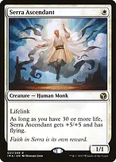
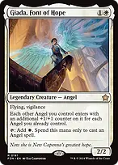
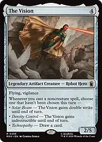
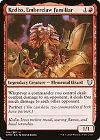

Efficient creatures that become lethal together

Serra Ascendant
A one-mana lifelinker that is a 6/6 flier while you have at least thirty life. Akroma adds two more power and toughness for flying and lifelink, making an inexpensive threat relevant deep into the game. Its size shrinks if your life total falls below thirty.

Giada, Font of Hope
A cheap flying, vigilant body and an extra white mana source for your Angel spells, including Akroma. It cannot spend that mana on Vial Smasher or non-Angels. Its counters also make Angels put onto the battlefield by reanimation or Hellkite Courser enter larger.

The Vision
Flying and vigilance provide a solid baseline. Noncreature spells can grant it double strike or indestructible, or draw a card, with each mode available once per turn. Cast the enabling spell before Odric resolves if you want the new ability shared immediately. The temporary abilities disappear at end of turn.

Kediss, Emberclaw Familiar
When Akroma or Vial Smasher deals combat damage to one opponent, that commander deals the same amount as noncombat damage to each other opponent. Gisela can multiply both the initial hit and the resulting splash: a six-power unblocked commander deals twelve, then twenty-four to each other opponent. Kediss does not trigger from Vial's spell-driven damage, and its splash does not count as commander damage.
With Akroma, Odric, and Knuckles, the shared set includes flying, first strike, double strike, haste, trample, and vigilance. That gives most of your other creatures +6/+6 for the combat; Vial Smasher gets another +1/+1 for having partner. Add deathtouch and lifelink from Basilisk Collar and Vial can reach eleven power with double strike, enough for twenty-two commander damage if both hits connect. These are board-based finishing combinations that opponents can disrupt.
What to keep in an opening hand and how to sequence
Keep three lands with access to all three colours, an early rock or Giada, and a useful draw creature or interaction spell. Two-land hands need especially good cheap development and a credible route to the third land. Mulligan hands with several expensive Angels and no ramp; Akroma already guarantees access to a late threat.
An example keep is Command Tower, Marsh Flats, Sacred Foundry, Arcane Signet, Esper Sentinel, Knuckles the Echidna, and Swords to Plowshares. Fetch Scrubland or Godless Shrine when black is missing, then prioritize the mix of early cards, development, and protection demanded by the table. Do not spend the removal merely to generate a small Vial trigger.
Vial normally enters before Akroma, making subsequent development and opponent-turn interaction chip away at life totals. Akroma should arrive when you have creatures worth amplifying or a protected finishing line. She is not an efficient seven-mana play into an empty board unless the game specifically calls for her defensive body.
Before combat, equip keyword sources and decide whether The Vision needs an enabling noncreature spell. Stack Akroma first and Odric second so Odric resolves first. After that calculation, adding a new keyword does not retroactively increase the bonus already granted, though the new ability still works normally.
For an Aurelia turn, account for the second Akroma trigger and the fact that the first bonus lasts until end of turn. Spread evasive attacks to generate cards and Treasure, then concentrate damage when a player can be eliminated. Kediss splash and Vial damage are normal life-total pressure; track combat commander damage separately for Akroma and Vial rather than combining them.
Against graveyard hate, hard-cast threats and preserve the independent draw engines. Against sweepers, keep one recovery route or a protection spell rather than deploying every creature. Liesa helps against death, not exile, and a reanimated threat does not provide the same Vial damage as casting that threat.
The three Game Changers are Smothering Tithe, The One Ring, and Teferi's Protection. The deck aims for strong Bracket 3 combat finishes backed by interaction and accumulated resources, with no planned infinite combo, mass land denial, or extra-turn chain. Aurelia supplies a finite extra combat; the list does not contain a repeatable attack loop.